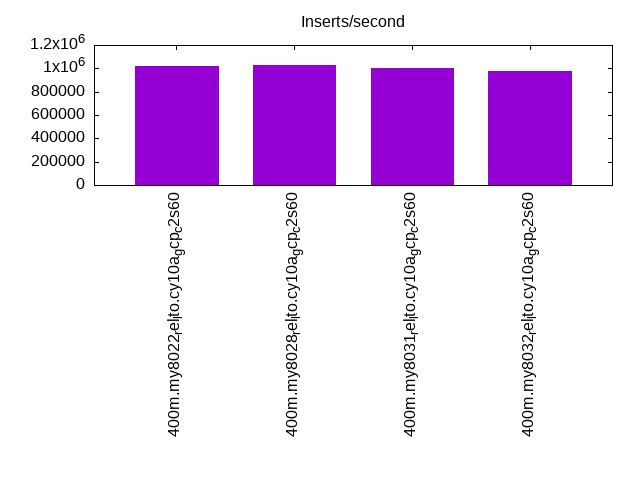
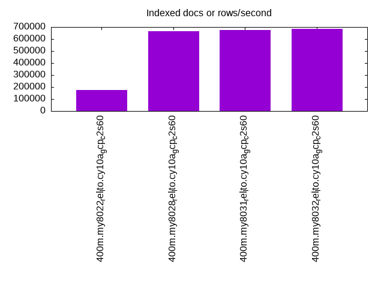
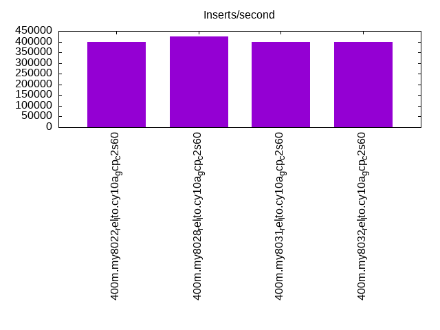
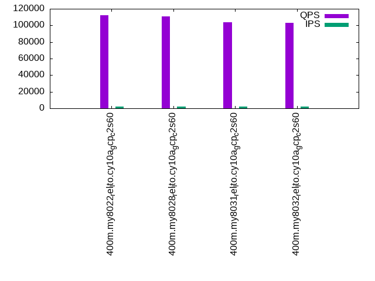
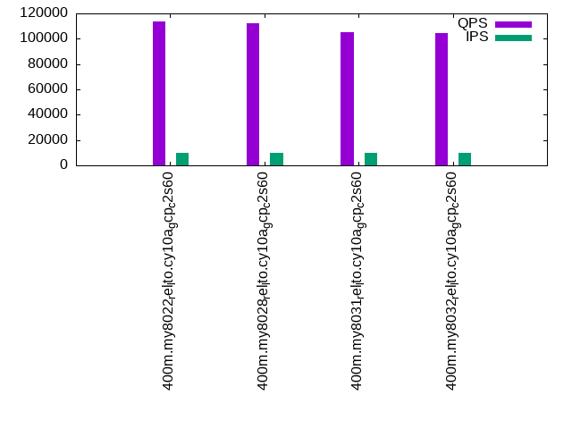
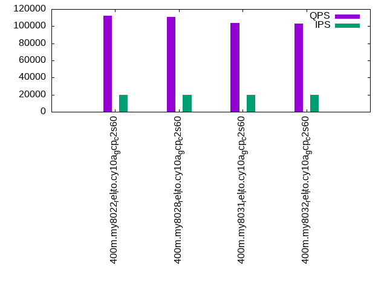

This is a report for the insert benchmark with 400M docs and 20 client(s). It is generated by scripts (bash, awk, sed) and Tufte might not be impressed. An overview of the insert benchmark is here and a short update is here. Below, by DBMS, I mean DBMS+version.config. An example is my8020.c10b40 where my means MySQL, 8020 is version 8.0.20 and c10b40 is the name for the configuration file.
This is a report for the insert benchmark with 400M docs and 20 client(s). It is generated by scripts (bash, awk, sed) and Tufte might not be impressed. An overview of the insert benchmark is here and a short update is here. Below, by DBMS, I mean DBMS+version.config. An example is my8020.c10b40 where my means MySQL, 8020 is version 8.0.20 and c10b40 is the name for the configuration file.The test server is c2-standard-60 from GCP with 30 cores, hyperthreads disabled, 240G RAM and 3T of NVMe (XFS with RAID0 over 8 devices). The benchmark was run with 20 clients and there were 1 or 2 connections per client (1 for queries, 1 for inserts). It uses 20 tables with a client per table. It loads 20M rows per table without secondary indexes, creates secondary indexes, loads another 20M rows per table then does 3 read+write tests for one hour each that do queries as fast as possible with 100, 500 and then 1000 writes/second/client concurrent with the queries. The database is cached by the storage engine and the only IO is for writes. Clients and the DBMS share one server. The per-database configs are in the per-database subdirectories here.
The tested DBMS are:
The numbers are inserts/s for l.i0 and l.i1, indexed docs (or rows) /s for l.x and queries/s for q*.2. The values are the average rate over the entire test for inserts (IPS) and queries (QPS). The range of values for IPS and QPS is split into 3 parts: bottom 25%, middle 50%, top 25%. Values in the bottom 25% have a red background, values in the top 25% have a green background and values in the middle have no color. A gray background is used for values that can be ignored because the DBMS did not sustain the target insert rate. Red backgrounds are not used when the minimum value is within 80% of the max value.
| dbms | l.i0 | l.x | l.i1 | q100.1 | q500.1 | q1000.1 |
|---|---|---|---|---|---|---|
| 400m.my8022_rel_lto.cy10a_gcp_c2s60 | 1020408 | 176100 | 398804 | 112549 | 113438 | 112224 |
| 400m.my8028_rel_lto.cy10a_gcp_c2s60 | 1028278 | 663516 | 423729 | 110918 | 112222 | 110573 |
| 400m.my8031_rel_lto.cy10a_gcp_c2s60 | 1002506 | 674705 | 398010 | 104056 | 105513 | 103646 |
| 400m.my8032_rel_lto.cy10a_gcp_c2s60 | 977995 | 682764 | 397614 | 102958 | 104637 | 103026 |
This table has relative throughput, throughput for the DBMS relative to the DBMS in the first line, using the absolute throughput from the previous table.
| dbms | l.i0 | l.x | l.i1 | q100.1 | q500.1 | q1000.1 |
|---|---|---|---|---|---|---|
| 400m.my8022_rel_lto.cy10a_gcp_c2s60 | 1.00 | 1.00 | 1.00 | 1.00 | 1.00 | 1.00 |
| 400m.my8028_rel_lto.cy10a_gcp_c2s60 | 1.01 | 3.77 | 1.06 | 0.99 | 0.99 | 0.99 |
| 400m.my8031_rel_lto.cy10a_gcp_c2s60 | 0.98 | 3.83 | 1.00 | 0.92 | 0.93 | 0.92 |
| 400m.my8032_rel_lto.cy10a_gcp_c2s60 | 0.96 | 3.88 | 1.00 | 0.91 | 0.92 | 0.92 |
This lists the average rate of inserts/s for the tests that do inserts concurrent with queries. For such tests the query rate is listed in the table above. The read+write tests are setup so that the insert rate should match the target rate every second. Cells that are not at least 95% of the target have a red background to indicate a failure to satisfy the target.
| dbms | q100.1 | q500.1 | q1000.1 |
|---|---|---|---|
| my8022_rel_lto.cy10a_gcp_c2s60 | 1977 | 9879 | 19769 |
| my8028_rel_lto.cy10a_gcp_c2s60 | 1977 | 9879 | 19780 |
| my8031_rel_lto.cy10a_gcp_c2s60 | 1976 | 9879 | 19769 |
| my8032_rel_lto.cy10a_gcp_c2s60 | 1977 | 9885 | 19769 |
| target | 2000 | 10000 | 20000 |
l.i0: load without secondary indexes. Graphs for performance per 1-second interval are here.
Average throughput:
Insert response time histogram: each cell has the percentage of responses that take <= the time in the header and max is the max response time in seconds. For the max column values in the top 25% of the range have a red background and in the bottom 25% of the range have a green background. The red background is not used when the min value is within 80% of the max value.
| dbms | 256us | 1ms | 4ms | 16ms | 64ms | 256ms | 1s | 4s | 16s | gt | max |
|---|---|---|---|---|---|---|---|---|---|---|---|
| my8022_rel_lto.cy10a_gcp_c2s60 | 0.914 | 98.618 | 0.421 | 0.011 | 0.036 | 0.218 | |||||
| my8028_rel_lto.cy10a_gcp_c2s60 | 1.287 | 98.116 | 0.498 | 0.063 | 0.035 | 0.002 | 0.310 | ||||
| my8031_rel_lto.cy10a_gcp_c2s60 | 0.831 | 98.577 | 0.486 | 0.071 | 0.033 | 0.003 | 0.298 | ||||
| my8032_rel_lto.cy10a_gcp_c2s60 | 0.458 | 98.931 | 0.509 | 0.064 | 0.037 | 0.002 | 0.300 |
Performance metrics for the DBMS listed above. Some are normalized by throughput, others are not. Legend for results is here.
ips qps rps rmbps wps wmbps rpq rkbpq wpi wkbpi csps cpups cspq cpupq dbgb1 dbgb2 rss maxop p50 p99 tag 1020408 0 0 0.0 1786.0 230.2 0.000 0.000 0.002 0.231 206953 66.7 0.203 20 26.4 155.0 9.3 0.218 54142 41854 400m.my8022_rel_lto.cy10a_gcp_c2s60 1028278 0 0 0.0 1714.9 231.3 0.000 0.000 0.002 0.230 204459 65.7 0.199 19 26.4 155.0 9.3 0.310 56184 37958 400m.my8028_rel_lto.cy10a_gcp_c2s60 1002506 0 0 0.0 1650.4 220.9 0.000 0.000 0.002 0.226 199267 65.3 0.199 20 26.4 155.0 9.3 0.298 52643 37858 400m.my8031_rel_lto.cy10a_gcp_c2s60 977995 0 0 0.0 1620.5 215.6 0.000 0.000 0.002 0.226 193422 66.1 0.198 20 26.4 155.0 9.3 0.300 52165 38473 400m.my8032_rel_lto.cy10a_gcp_c2s60
l.x: create secondary indexes.
Average throughput:
Performance metrics for the DBMS listed above. Some are normalized by throughput, others are not. Legend for results is here.
ips qps rps rmbps wps wmbps rpq rkbpq wpi wkbpi csps cpups cspq cpupq dbgb1 dbgb2 rss maxop p50 p99 tag 176100 0 0 0.0 2853.0 150.5 0.000 0.000 0.016 0.875 559950 44.8 3.180 76 58.8 187.4 9.4 0.003 NA NA 400m.my8022_rel_lto.cy10a_gcp_c2s60 663516 0 3360 231.0 14184.7 634.9 0.005 0.356 0.021 0.980 530161 50.0 0.799 23 58.8 187.4 9.3 0.091 NA NA 400m.my8028_rel_lto.cy10a_gcp_c2s60 674705 0 3416 234.9 14416.3 646.9 0.005 0.357 0.021 0.982 485218 51.2 0.719 23 58.8 187.4 9.3 0.039 NA NA 400m.my8031_rel_lto.cy10a_gcp_c2s60 682764 0 3438 236.8 14501.1 652.4 0.005 0.355 0.021 0.978 479595 52.3 0.702 23 58.8 187.4 9.3 0.013 NA NA 400m.my8032_rel_lto.cy10a_gcp_c2s60
l.i1: continue load after secondary indexes created. Graphs for performance per 1-second interval are here.
Average throughput:
Insert response time histogram: each cell has the percentage of responses that take <= the time in the header and max is the max response time in seconds. For the max column values in the top 25% of the range have a red background and in the bottom 25% of the range have a green background. The red background is not used when the min value is within 80% of the max value.
| dbms | 256us | 1ms | 4ms | 16ms | 64ms | 256ms | 1s | 4s | 16s | gt | max |
|---|---|---|---|---|---|---|---|---|---|---|---|
| my8022_rel_lto.cy10a_gcp_c2s60 | 98.684 | 1.175 | 0.122 | 0.019 | 0.231 | ||||||
| my8028_rel_lto.cy10a_gcp_c2s60 | 98.885 | 1.018 | 0.072 | 0.024 | nonzero | 0.632 | |||||
| my8031_rel_lto.cy10a_gcp_c2s60 | 98.569 | 1.310 | 0.087 | 0.031 | 0.002 | nonzero | 1.286 | ||||
| my8032_rel_lto.cy10a_gcp_c2s60 | 98.442 | 1.439 | 0.085 | 0.032 | 0.002 | nonzero | 1.190 |
Performance metrics for the DBMS listed above. Some are normalized by throughput, others are not. Legend for results is here.
ips qps rps rmbps wps wmbps rpq rkbpq wpi wkbpi csps cpups cspq cpupq dbgb1 dbgb2 rss maxop p50 p99 tag 398804 0 233 4.3 8077.6 405.0 0.001 0.011 0.020 1.040 224291 68.1 0.562 51 157.8 286.4 9.3 0.231 22226 3949 400m.my8022_rel_lto.cy10a_gcp_c2s60 423729 0 170 3.5 7857.0 413.0 0.000 0.008 0.019 0.998 234103 67.8 0.552 48 157.8 286.3 9.3 0.632 22625 10139 400m.my8028_rel_lto.cy10a_gcp_c2s60 398010 0 493 13.8 8438.5 429.0 0.001 0.035 0.021 1.104 242979 67.8 0.610 51 157.8 286.4 9.3 1.286 21127 5694 400m.my8031_rel_lto.cy10a_gcp_c2s60 397614 0 445 12.4 8302.0 426.7 0.001 0.032 0.021 1.099 268973 68.4 0.676 52 157.8 286.4 9.3 1.190 21093 5694 400m.my8032_rel_lto.cy10a_gcp_c2s60
q100.1: range queries with 100 insert/s per client. Graphs for performance per 1-second interval are here.
Average throughput:
Query response time histogram: each cell has the percentage of responses that take <= the time in the header and max is the max response time in seconds. For max values in the top 25% of the range have a red background and in the bottom 25% of the range have a green background. The red background is not used when the min value is within 80% of the max value.
| dbms | 256us | 1ms | 4ms | 16ms | 64ms | 256ms | 1s | 4s | 16s | gt | max |
|---|---|---|---|---|---|---|---|---|---|---|---|
| my8022_rel_lto.cy10a_gcp_c2s60 | 97.820 | 2.177 | 0.003 | nonzero | nonzero | 0.027 | |||||
| my8028_rel_lto.cy10a_gcp_c2s60 | 97.764 | 2.232 | 0.004 | nonzero | nonzero | 0.028 | |||||
| my8031_rel_lto.cy10a_gcp_c2s60 | 96.819 | 3.177 | 0.004 | nonzero | nonzero | 0.027 | |||||
| my8032_rel_lto.cy10a_gcp_c2s60 | 96.584 | 3.412 | 0.004 | nonzero | nonzero | 0.027 |
Insert response time histogram: each cell has the percentage of responses that take <= the time in the header and max is the max response time in seconds. For max values in the top 25% of the range have a red background and in the bottom 25% of the range have a green background. The red background is not used when the min value is within 80% of the max value.
| dbms | 256us | 1ms | 4ms | 16ms | 64ms | 256ms | 1s | 4s | 16s | gt | max |
|---|---|---|---|---|---|---|---|---|---|---|---|
| my8022_rel_lto.cy10a_gcp_c2s60 | 95.282 | 4.681 | 0.037 | 0.035 | |||||||
| my8028_rel_lto.cy10a_gcp_c2s60 | 93.808 | 6.176 | 0.015 | 0.030 | |||||||
| my8031_rel_lto.cy10a_gcp_c2s60 | 95.417 | 4.578 | 0.006 | 0.019 | |||||||
| my8032_rel_lto.cy10a_gcp_c2s60 | 94.679 | 5.312 | 0.008 | 0.029 |
Performance metrics for the DBMS listed above. Some are normalized by throughput, others are not. Legend for results is here.
ips qps rps rmbps wps wmbps rpq rkbpq wpi wkbpi csps cpups cspq cpupq dbgb1 dbgb2 rss maxop p50 p99 tag 1977 112549 0 0.0 3124.8 89.6 0.000 0.000 1.581 46.404 427059 66.3 3.794 177 159.7 288.3 9.3 0.027 5690 5306 400m.my8022_rel_lto.cy10a_gcp_c2s60 1977 110918 0 0.0 3118.3 89.8 0.000 0.000 1.577 46.520 421540 66.1 3.800 179 159.7 288.3 9.3 0.028 5514 5114 400m.my8028_rel_lto.cy10a_gcp_c2s60 1976 104056 0 0.0 3568.9 102.8 0.000 0.000 1.806 53.296 404004 65.9 3.883 190 159.7 288.3 9.3 0.027 5324 4890 400m.my8031_rel_lto.cy10a_gcp_c2s60 1977 102958 0 0.0 3602.8 103.8 0.000 0.000 1.822 53.766 400694 66.0 3.892 192 159.7 288.3 9.3 0.027 5274 4811 400m.my8032_rel_lto.cy10a_gcp_c2s60
q500.1: range queries with 500 insert/s per client. Graphs for performance per 1-second interval are here.
Average throughput:
Query response time histogram: each cell has the percentage of responses that take <= the time in the header and max is the max response time in seconds. For max values in the top 25% of the range have a red background and in the bottom 25% of the range have a green background. The red background is not used when the min value is within 80% of the max value.
| dbms | 256us | 1ms | 4ms | 16ms | 64ms | 256ms | 1s | 4s | 16s | gt | max |
|---|---|---|---|---|---|---|---|---|---|---|---|
| my8022_rel_lto.cy10a_gcp_c2s60 | 98.098 | 1.879 | 0.020 | 0.002 | nonzero | 0.024 | |||||
| my8028_rel_lto.cy10a_gcp_c2s60 | 98.041 | 1.938 | 0.019 | 0.002 | nonzero | 0.030 | |||||
| my8031_rel_lto.cy10a_gcp_c2s60 | 97.440 | 2.537 | 0.021 | 0.002 | nonzero | 0.027 | |||||
| my8032_rel_lto.cy10a_gcp_c2s60 | 97.323 | 2.654 | 0.021 | 0.002 | nonzero | 0.027 |
Insert response time histogram: each cell has the percentage of responses that take <= the time in the header and max is the max response time in seconds. For max values in the top 25% of the range have a red background and in the bottom 25% of the range have a green background. The red background is not used when the min value is within 80% of the max value.
| dbms | 256us | 1ms | 4ms | 16ms | 64ms | 256ms | 1s | 4s | 16s | gt | max |
|---|---|---|---|---|---|---|---|---|---|---|---|
| my8022_rel_lto.cy10a_gcp_c2s60 | 56.747 | 42.558 | 0.694 | 0.042 | |||||||
| my8028_rel_lto.cy10a_gcp_c2s60 | 69.503 | 29.979 | 0.518 | 0.041 | |||||||
| my8031_rel_lto.cy10a_gcp_c2s60 | 59.745 | 39.596 | 0.659 | 0.054 | |||||||
| my8032_rel_lto.cy10a_gcp_c2s60 | 57.553 | 41.646 | 0.801 | 0.046 |
Performance metrics for the DBMS listed above. Some are normalized by throughput, others are not. Legend for results is here.
ips qps rps rmbps wps wmbps rpq rkbpq wpi wkbpi csps cpups cspq cpupq dbgb1 dbgb2 rss maxop p50 p99 tag 9879 113438 0 0.0 583.8 23.8 0.000 0.000 0.059 2.463 408129 66.7 3.598 176 167.7 296.3 9.3 0.024 5677 5452 400m.my8022_rel_lto.cy10a_gcp_c2s60 9879 112222 0 0.0 601.2 24.0 0.000 0.000 0.061 2.486 405258 66.5 3.611 178 167.7 296.3 9.3 0.030 5564 5338 400m.my8028_rel_lto.cy10a_gcp_c2s60 9879 105513 0 0.0 501.7 21.6 0.000 0.000 0.051 2.241 383209 66.2 3.632 188 167.8 296.3 9.3 0.027 5338 5019 400m.my8031_rel_lto.cy10a_gcp_c2s60 9885 104637 0 0.0 501.1 21.4 0.000 0.000 0.051 2.214 380294 66.5 3.634 191 167.8 296.3 9.3 0.027 5276 4988 400m.my8032_rel_lto.cy10a_gcp_c2s60
q1000.1: range queries with 1000 insert/s per client. Graphs for performance per 1-second interval are here.
Average throughput:
Query response time histogram: each cell has the percentage of responses that take <= the time in the header and max is the max response time in seconds. For max values in the top 25% of the range have a red background and in the bottom 25% of the range have a green background. The red background is not used when the min value is within 80% of the max value.
| dbms | 256us | 1ms | 4ms | 16ms | 64ms | 256ms | 1s | 4s | 16s | gt | max |
|---|---|---|---|---|---|---|---|---|---|---|---|
| my8022_rel_lto.cy10a_gcp_c2s60 | 98.017 | 1.952 | 0.028 | 0.003 | nonzero | 0.029 | |||||
| my8028_rel_lto.cy10a_gcp_c2s60 | 97.890 | 2.078 | 0.029 | 0.003 | nonzero | 0.028 | |||||
| my8031_rel_lto.cy10a_gcp_c2s60 | 97.098 | 2.869 | 0.030 | 0.004 | nonzero | 0.026 | |||||
| my8032_rel_lto.cy10a_gcp_c2s60 | 97.033 | 2.931 | 0.031 | 0.004 | nonzero | 0.029 |
Insert response time histogram: each cell has the percentage of responses that take <= the time in the header and max is the max response time in seconds. For max values in the top 25% of the range have a red background and in the bottom 25% of the range have a green background. The red background is not used when the min value is within 80% of the max value.
| dbms | 256us | 1ms | 4ms | 16ms | 64ms | 256ms | 1s | 4s | 16s | gt | max |
|---|---|---|---|---|---|---|---|---|---|---|---|
| my8022_rel_lto.cy10a_gcp_c2s60 | 56.850 | 42.400 | 0.750 | 0.055 | |||||||
| my8028_rel_lto.cy10a_gcp_c2s60 | 63.242 | 36.037 | 0.721 | 0.057 | |||||||
| my8031_rel_lto.cy10a_gcp_c2s60 | 58.280 | 40.807 | 0.913 | 0.052 | |||||||
| my8032_rel_lto.cy10a_gcp_c2s60 | 57.591 | 41.346 | 1.063 | 0.057 |
Performance metrics for the DBMS listed above. Some are normalized by throughput, others are not. Legend for results is here.
ips qps rps rmbps wps wmbps rpq rkbpq wpi wkbpi csps cpups cspq cpupq dbgb1 dbgb2 rss maxop p50 p99 tag 19769 112224 9 0.1 2130.4 66.0 0.000 0.001 0.108 3.416 400848 67.7 3.572 181 176.1 304.7 9.3 0.029 5660 5370 400m.my8022_rel_lto.cy10a_gcp_c2s60 19780 110573 10 0.2 2570.9 77.1 0.000 0.001 0.130 3.992 401096 67.6 3.627 183 176.1 304.7 9.3 0.028 5500 5210 400m.my8028_rel_lto.cy10a_gcp_c2s60 19769 103646 10 0.2 2908.4 84.7 0.000 0.002 0.147 4.385 380960 68.1 3.676 197 176.1 304.7 9.3 0.026 5210 4939 400m.my8031_rel_lto.cy10a_gcp_c2s60 19769 103026 10 0.2 3049.9 88.7 0.000 0.002 0.154 4.593 378396 68.2 3.673 199 176.1 304.7 9.3 0.029 5130 4845 400m.my8032_rel_lto.cy10a_gcp_c2s60
l.i0: load without secondary indexes
Performance metrics for all DBMS, not just the ones listed above. Some are normalized by throughput, others are not. Legend for results is here.
ips qps rps rmbps wps wmbps rpq rkbpq wpi wkbpi csps cpups cspq cpupq dbgb1 dbgb2 rss maxop p50 p99 tag 1020408 0 0 0.0 1786.0 230.2 0.000 0.000 0.002 0.231 206953 66.7 0.203 20 26.4 155.0 9.3 0.218 54142 41854 400m.my8022_rel_lto.cy10a_gcp_c2s60 1028278 0 0 0.0 1714.9 231.3 0.000 0.000 0.002 0.230 204459 65.7 0.199 19 26.4 155.0 9.3 0.310 56184 37958 400m.my8028_rel_lto.cy10a_gcp_c2s60 1002506 0 0 0.0 1650.4 220.9 0.000 0.000 0.002 0.226 199267 65.3 0.199 20 26.4 155.0 9.3 0.298 52643 37858 400m.my8031_rel_lto.cy10a_gcp_c2s60 977995 0 0 0.0 1620.5 215.6 0.000 0.000 0.002 0.226 193422 66.1 0.198 20 26.4 155.0 9.3 0.300 52165 38473 400m.my8032_rel_lto.cy10a_gcp_c2s60
l.x: create secondary indexes
Performance metrics for all DBMS, not just the ones listed above. Some are normalized by throughput, others are not. Legend for results is here.
ips qps rps rmbps wps wmbps rpq rkbpq wpi wkbpi csps cpups cspq cpupq dbgb1 dbgb2 rss maxop p50 p99 tag 176100 0 0 0.0 2853.0 150.5 0.000 0.000 0.016 0.875 559950 44.8 3.180 76 58.8 187.4 9.4 0.003 NA NA 400m.my8022_rel_lto.cy10a_gcp_c2s60 663516 0 3360 231.0 14184.7 634.9 0.005 0.356 0.021 0.980 530161 50.0 0.799 23 58.8 187.4 9.3 0.091 NA NA 400m.my8028_rel_lto.cy10a_gcp_c2s60 674705 0 3416 234.9 14416.3 646.9 0.005 0.357 0.021 0.982 485218 51.2 0.719 23 58.8 187.4 9.3 0.039 NA NA 400m.my8031_rel_lto.cy10a_gcp_c2s60 682764 0 3438 236.8 14501.1 652.4 0.005 0.355 0.021 0.978 479595 52.3 0.702 23 58.8 187.4 9.3 0.013 NA NA 400m.my8032_rel_lto.cy10a_gcp_c2s60
l.i1: continue load after secondary indexes created
Performance metrics for all DBMS, not just the ones listed above. Some are normalized by throughput, others are not. Legend for results is here.
ips qps rps rmbps wps wmbps rpq rkbpq wpi wkbpi csps cpups cspq cpupq dbgb1 dbgb2 rss maxop p50 p99 tag 398804 0 233 4.3 8077.6 405.0 0.001 0.011 0.020 1.040 224291 68.1 0.562 51 157.8 286.4 9.3 0.231 22226 3949 400m.my8022_rel_lto.cy10a_gcp_c2s60 423729 0 170 3.5 7857.0 413.0 0.000 0.008 0.019 0.998 234103 67.8 0.552 48 157.8 286.3 9.3 0.632 22625 10139 400m.my8028_rel_lto.cy10a_gcp_c2s60 398010 0 493 13.8 8438.5 429.0 0.001 0.035 0.021 1.104 242979 67.8 0.610 51 157.8 286.4 9.3 1.286 21127 5694 400m.my8031_rel_lto.cy10a_gcp_c2s60 397614 0 445 12.4 8302.0 426.7 0.001 0.032 0.021 1.099 268973 68.4 0.676 52 157.8 286.4 9.3 1.190 21093 5694 400m.my8032_rel_lto.cy10a_gcp_c2s60
q100.1: range queries with 100 insert/s per client
Performance metrics for all DBMS, not just the ones listed above. Some are normalized by throughput, others are not. Legend for results is here.
ips qps rps rmbps wps wmbps rpq rkbpq wpi wkbpi csps cpups cspq cpupq dbgb1 dbgb2 rss maxop p50 p99 tag 1977 112549 0 0.0 3124.8 89.6 0.000 0.000 1.581 46.404 427059 66.3 3.794 177 159.7 288.3 9.3 0.027 5690 5306 400m.my8022_rel_lto.cy10a_gcp_c2s60 1977 110918 0 0.0 3118.3 89.8 0.000 0.000 1.577 46.520 421540 66.1 3.800 179 159.7 288.3 9.3 0.028 5514 5114 400m.my8028_rel_lto.cy10a_gcp_c2s60 1976 104056 0 0.0 3568.9 102.8 0.000 0.000 1.806 53.296 404004 65.9 3.883 190 159.7 288.3 9.3 0.027 5324 4890 400m.my8031_rel_lto.cy10a_gcp_c2s60 1977 102958 0 0.0 3602.8 103.8 0.000 0.000 1.822 53.766 400694 66.0 3.892 192 159.7 288.3 9.3 0.027 5274 4811 400m.my8032_rel_lto.cy10a_gcp_c2s60
q500.1: range queries with 500 insert/s per client
Performance metrics for all DBMS, not just the ones listed above. Some are normalized by throughput, others are not. Legend for results is here.
ips qps rps rmbps wps wmbps rpq rkbpq wpi wkbpi csps cpups cspq cpupq dbgb1 dbgb2 rss maxop p50 p99 tag 9879 113438 0 0.0 583.8 23.8 0.000 0.000 0.059 2.463 408129 66.7 3.598 176 167.7 296.3 9.3 0.024 5677 5452 400m.my8022_rel_lto.cy10a_gcp_c2s60 9879 112222 0 0.0 601.2 24.0 0.000 0.000 0.061 2.486 405258 66.5 3.611 178 167.7 296.3 9.3 0.030 5564 5338 400m.my8028_rel_lto.cy10a_gcp_c2s60 9879 105513 0 0.0 501.7 21.6 0.000 0.000 0.051 2.241 383209 66.2 3.632 188 167.8 296.3 9.3 0.027 5338 5019 400m.my8031_rel_lto.cy10a_gcp_c2s60 9885 104637 0 0.0 501.1 21.4 0.000 0.000 0.051 2.214 380294 66.5 3.634 191 167.8 296.3 9.3 0.027 5276 4988 400m.my8032_rel_lto.cy10a_gcp_c2s60
q1000.1: range queries with 1000 insert/s per client
Performance metrics for all DBMS, not just the ones listed above. Some are normalized by throughput, others are not. Legend for results is here.
ips qps rps rmbps wps wmbps rpq rkbpq wpi wkbpi csps cpups cspq cpupq dbgb1 dbgb2 rss maxop p50 p99 tag 19769 112224 9 0.1 2130.4 66.0 0.000 0.001 0.108 3.416 400848 67.7 3.572 181 176.1 304.7 9.3 0.029 5660 5370 400m.my8022_rel_lto.cy10a_gcp_c2s60 19780 110573 10 0.2 2570.9 77.1 0.000 0.001 0.130 3.992 401096 67.6 3.627 183 176.1 304.7 9.3 0.028 5500 5210 400m.my8028_rel_lto.cy10a_gcp_c2s60 19769 103646 10 0.2 2908.4 84.7 0.000 0.002 0.147 4.385 380960 68.1 3.676 197 176.1 304.7 9.3 0.026 5210 4939 400m.my8031_rel_lto.cy10a_gcp_c2s60 19769 103026 10 0.2 3049.9 88.7 0.000 0.002 0.154 4.593 378396 68.2 3.673 199 176.1 304.7 9.3 0.029 5130 4845 400m.my8032_rel_lto.cy10a_gcp_c2s60
Insert response time histogram
256us 1ms 4ms 16ms 64ms 256ms 1s 4s 16s gt max tag 0.000 0.914 98.618 0.421 0.011 0.036 0.000 0.000 0.000 0.000 0.218 my8022_rel_lto.cy10a_gcp_c2s60 0.000 1.287 98.116 0.498 0.063 0.035 0.002 0.000 0.000 0.000 0.310 my8028_rel_lto.cy10a_gcp_c2s60 0.000 0.831 98.577 0.486 0.071 0.033 0.003 0.000 0.000 0.000 0.298 my8031_rel_lto.cy10a_gcp_c2s60 0.000 0.458 98.931 0.509 0.064 0.037 0.002 0.000 0.000 0.000 0.300 my8032_rel_lto.cy10a_gcp_c2s60
TODO - determine whether there is data for create index response time
Insert response time histogram
256us 1ms 4ms 16ms 64ms 256ms 1s 4s 16s gt max tag 0.000 0.000 98.684 1.175 0.122 0.019 0.000 0.000 0.000 0.000 0.231 my8022_rel_lto.cy10a_gcp_c2s60 0.000 0.000 98.885 1.018 0.072 0.024 nonzero 0.000 0.000 0.000 0.632 my8028_rel_lto.cy10a_gcp_c2s60 0.000 0.000 98.569 1.310 0.087 0.031 0.002 nonzero 0.000 0.000 1.286 my8031_rel_lto.cy10a_gcp_c2s60 0.000 0.000 98.442 1.439 0.085 0.032 0.002 nonzero 0.000 0.000 1.190 my8032_rel_lto.cy10a_gcp_c2s60
Query response time histogram
256us 1ms 4ms 16ms 64ms 256ms 1s 4s 16s gt max tag 97.820 2.177 0.003 nonzero nonzero 0.000 0.000 0.000 0.000 0.000 0.027 my8022_rel_lto.cy10a_gcp_c2s60 97.764 2.232 0.004 nonzero nonzero 0.000 0.000 0.000 0.000 0.000 0.028 my8028_rel_lto.cy10a_gcp_c2s60 96.819 3.177 0.004 nonzero nonzero 0.000 0.000 0.000 0.000 0.000 0.027 my8031_rel_lto.cy10a_gcp_c2s60 96.584 3.412 0.004 nonzero nonzero 0.000 0.000 0.000 0.000 0.000 0.027 my8032_rel_lto.cy10a_gcp_c2s60
Insert response time histogram
256us 1ms 4ms 16ms 64ms 256ms 1s 4s 16s gt max tag 0.000 0.000 95.282 4.681 0.037 0.000 0.000 0.000 0.000 0.000 0.035 my8022_rel_lto.cy10a_gcp_c2s60 0.000 0.000 93.808 6.176 0.015 0.000 0.000 0.000 0.000 0.000 0.030 my8028_rel_lto.cy10a_gcp_c2s60 0.000 0.000 95.417 4.578 0.006 0.000 0.000 0.000 0.000 0.000 0.019 my8031_rel_lto.cy10a_gcp_c2s60 0.000 0.000 94.679 5.312 0.008 0.000 0.000 0.000 0.000 0.000 0.029 my8032_rel_lto.cy10a_gcp_c2s60
Query response time histogram
256us 1ms 4ms 16ms 64ms 256ms 1s 4s 16s gt max tag 98.098 1.879 0.020 0.002 nonzero 0.000 0.000 0.000 0.000 0.000 0.024 my8022_rel_lto.cy10a_gcp_c2s60 98.041 1.938 0.019 0.002 nonzero 0.000 0.000 0.000 0.000 0.000 0.030 my8028_rel_lto.cy10a_gcp_c2s60 97.440 2.537 0.021 0.002 nonzero 0.000 0.000 0.000 0.000 0.000 0.027 my8031_rel_lto.cy10a_gcp_c2s60 97.323 2.654 0.021 0.002 nonzero 0.000 0.000 0.000 0.000 0.000 0.027 my8032_rel_lto.cy10a_gcp_c2s60
Insert response time histogram
256us 1ms 4ms 16ms 64ms 256ms 1s 4s 16s gt max tag 0.000 0.000 56.747 42.558 0.694 0.000 0.000 0.000 0.000 0.000 0.042 my8022_rel_lto.cy10a_gcp_c2s60 0.000 0.000 69.503 29.979 0.518 0.000 0.000 0.000 0.000 0.000 0.041 my8028_rel_lto.cy10a_gcp_c2s60 0.000 0.000 59.745 39.596 0.659 0.000 0.000 0.000 0.000 0.000 0.054 my8031_rel_lto.cy10a_gcp_c2s60 0.000 0.000 57.553 41.646 0.801 0.000 0.000 0.000 0.000 0.000 0.046 my8032_rel_lto.cy10a_gcp_c2s60
Query response time histogram
256us 1ms 4ms 16ms 64ms 256ms 1s 4s 16s gt max tag 98.017 1.952 0.028 0.003 nonzero 0.000 0.000 0.000 0.000 0.000 0.029 my8022_rel_lto.cy10a_gcp_c2s60 97.890 2.078 0.029 0.003 nonzero 0.000 0.000 0.000 0.000 0.000 0.028 my8028_rel_lto.cy10a_gcp_c2s60 97.098 2.869 0.030 0.004 nonzero 0.000 0.000 0.000 0.000 0.000 0.026 my8031_rel_lto.cy10a_gcp_c2s60 97.033 2.931 0.031 0.004 nonzero 0.000 0.000 0.000 0.000 0.000 0.029 my8032_rel_lto.cy10a_gcp_c2s60
Insert response time histogram
256us 1ms 4ms 16ms 64ms 256ms 1s 4s 16s gt max tag 0.000 0.000 56.850 42.400 0.750 0.000 0.000 0.000 0.000 0.000 0.055 my8022_rel_lto.cy10a_gcp_c2s60 0.000 0.000 63.242 36.037 0.721 0.000 0.000 0.000 0.000 0.000 0.057 my8028_rel_lto.cy10a_gcp_c2s60 0.000 0.000 58.280 40.807 0.913 0.000 0.000 0.000 0.000 0.000 0.052 my8031_rel_lto.cy10a_gcp_c2s60 0.000 0.000 57.591 41.346 1.063 0.000 0.000 0.000 0.000 0.000 0.057 my8032_rel_lto.cy10a_gcp_c2s60